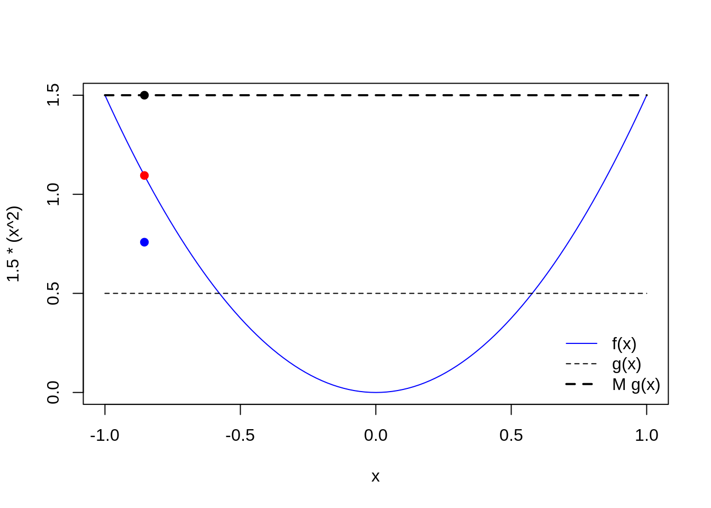
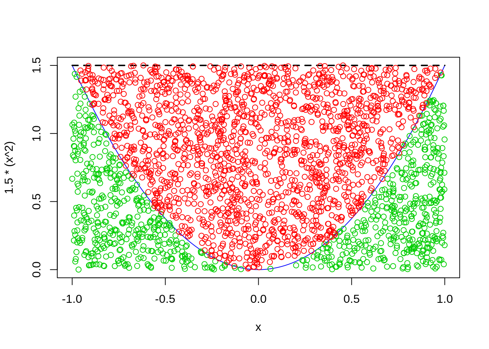

Geração de números não uniformes
Método de aceitação e rejeição
Walmes M. Zeviani e Fernando P. Mayer
1 Introdução
Quando se deseja gerar números aleatórios de distribuições de probabilidade, nem sempre é possível aplicar o método da transformação integral da probabilidade. Alguns situação são:
- Casos em que não se tem expressão para a função de densidade acumulada, \(F\), como é o caso da distribuição gaussiana e gama.
- Casos em que mesmo que se conheça \(F(x)\) não possível chegar à uma expressão para a função \(F^{-1}\).
Se a função densidade de probabilidade for conhecida, \(f\), então é possível gerar números aleatórios dessa variável aleatória caracterizada por \(f\) pelo método da aceitação e rejeição. É necessário satisfazer dois requisitos:
- Ter um bom gerador de números uniformes.
- Ter um bom gerador de números de uma variável aleatória representada por uma distribuição \(D\), escolhida de tal maneira que existe uma constante \(M\) tal que a densidade de \(g\) que caracteriza a distribuição \(D\) satisfaz \(f(x) \leq M g(x)\) para todo \(x\) do domínio de \(f\).
O seguinte algoritmo permite gerar números aleatórios de uma distribuição de probabilidade caracterizada pela função densidade \(f\):
- Gerar \(y\) como sendo uma ocorrência da variável aleatória representada por \(D\).
- Gerar \(u\) como sendo uma ocorrência de uma uniforme padrão.
- Se \(u \leq f(y)/(M g(y))\) considerar que \(x = y\) é um valor da distribuição de probabilidade alvo cuja densidade é \(f\), caso contrário, descartar \(y\).
- Repetir até atingir o número de valores desejado \(n\).
#-----------------------------------------------------------------------
# Seja X uma v.a. com f(x) = 1.5 * x^2, -1 < x < 1. Simular valores
# desta.
# Gráfico da f.d.p da v.a. X, f(x).
curve(1.5 * (x ^ 2), -1, 1)
## 1 with absolute error < 1.1e-14#-----------------------------------------------------------------------
# Considere como g() a densidade de uma uniforme entre -1 e 1. Então se
# a base é 2, o altura deve ser 0.5 para ter produto 1, assim g(y) =
# 0.5, -1 < y < 1. Qual deve ser um valor de M para garantir que f(x) <=
# (M g(x)) para todo x dentro do [-1, 1]? O valor de M tem que ser 3,
# pois 3 * 0.5 <= sup_{x} f(x) = 1.5.
curve(1.5 * (x^2), -1, 1, col = 4)
curve(0.5 + 0 * x, add = TRUE, lty = 2)
curve(3 * 0.5 + 0 * x, add = TRUE, lty = 2, lwd = 2)
legend("bottomright",
legend = c("f(x)", "g(x)", "M g(x)"),
lty = c(1, 2, 2),
col = c(4, 1, 1),
lwd = c(1, 1, 2),
bty = "n")
# Criando os elementos necessários.
f <- function(x) 1.5 * x^2
g <- function(x) 0.5 + 0 * x
M <- 3
x <- NULL
# 1. Gerar y cuja densidade é g()
y <- runif(n = 1, -1, 1)
y## [1] -0.8543427## [1] 0.5055696## [1] 0.7299015if (u < r) {
x <- y
print("u < r então valor aceito.")
} else {
print("u >= r então valor descartado.")
}## [1] "u < r então valor aceito."points(y, f(y), pch = 19, col = 2)
points(y, M * g(y), pch = 19, col = 1)
points(y, u * M * g(y), pch = 19, col = 4)
## Simula de uma unica vez, com um valor fixo de simulações
Nsim <- 2500
y <- runif(Nsim, -1, 1)
u <- runif(Nsim)
r <- f(y)/(M * g(y))
x <- y[u < r]
ua <- u[u < r]
ur <- u[u >= r]
curve(1.5 * (x^2), -1, 1, col = 4)
curve(3 * 0.5 + 0 * x, add = TRUE, lty = 2, lwd = 2)
points(x, ua * M * g(x), col = 3)
points(y[u >= r], ur * M * g(x), col = 2)## Warning in ur * M * g(x): longer object length is not a multiple of shorter
## object length
## [1] 0.3316## [1] 0.3333333## [1] 0.6684## Agora, simula um numero fixo de valores
N <- 10L
n <- 0L
l <- 1L
y <- runif(Nsim, -1, 1)
u <- runif(Nsim)
r <- f(y)/(M * g(y))
x <- y[u < r]
ua <- u[u < r]
ur <- u[u >= r]
x <- numeric(N)
while(n < N) {
y <- runif(1, -1, 1)
u <- runif(1)
r <- f(y)/(M * g(y))
if(u < r) {
x[n] <- y
n <- n + 1L
} else {
l <- l + 1L
}
}
x## [1] 0.9547781 -0.7894202 -0.9333966 0.9783591 0.6584835 -0.8654316
## [7] -0.7623606 -0.8694007 -0.8443441 0.0000000

Este conteúdo está disponível por meio da Licença Creative Commons 4.0